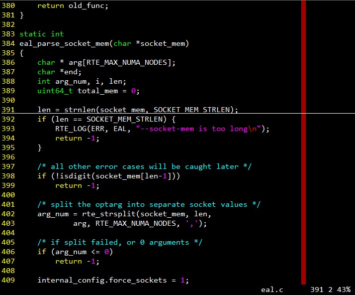

简介与基本配置¶
vim是一款非常强大的文字编辑软件，是各种类UNIX系统标配的文本编辑工具。相信此文的读者对它应该不会陌生，在这里就不做介绍了。
为什么要使用vim¶
在认识vim之前，我用过好多IDE：Visual Studio, Eclipse, C++ Builder，Source Insight, SlickEdit, Qt Creator等等，但我觉得这些东西都有这样那样的不足（Qt Creator不错）。
在我看来，vim吸引我的地方主要有：
- 几乎所有的类UNIX系统中都安装了它，就算没有vim也有vi;Windows上也有gVim
- 当登录到字符模式的远程类UNIX服务器时，可以使用它
- 代码高亮、行号、缩进、括号配对等小细节
- 一切操作都可以通过键盘完成，熟练之后非常高效，完全摆脱鼠标
- 对屏幕、文本的精确控制
- 丰富的扩展性，无数的颜色主题和各种各样的插件，还可以自己写脚本
- 完美支持中文，不会出现SourceInsight等工具的某些小问题
- 免费，小巧，简洁
当然，作为一款历史悠久的软件（1991年，vi更早），vim也不是没有缺点，比如：
- 上手十分困难，需要长时间的练习
- 没有Visual Studio, SlickEdit等许多IDE那种“一站式”功能，编码调试画界面生成类图都有。。。
- 代码提示，智能补全较弱（可以通过插件解决，后续文章介绍），查看符号之间的关系比较困难
是的，初学者学习vim会比较难（下面的图是各种编辑器的学习曲线，感觉一下）。一开始可能连保存文件、复制粘贴这样基本的功能都不知道怎么弄。但是请不要放弃，当你通过几天（几>7）熟练之后，你会对自己仅通过敲几个键就能掌握文本屏幕而兴奋不已。随着时间的增长，vim会变的越来越好用，成为你离不开的伙伴。而它灌输的哲学，甚至会影响你使用其他软件的习惯，比如，越来越倾向于使用高效的快捷键了。

本系列文章的指导思想和一些约定¶
本系列文章是自己通过学习和使用vim的亲身体验，进行的一些总结。虽然现在我已经能比较熟练地使用vim，但所用的技巧比vim所提供的简直是沧海一粟，还有很多奇妙的功能等着我去探索。
本系列文章的指导思想是尽量使用vim的默认配置，而不是复杂的配置和额外的插件。vim的扩展插件很多，也有很多奇技淫巧，但我只打算总结最常用的操作，以及最必需的插件，我认为简洁是一种美。
vim的很多快捷键都是区分大小写的，比如正常模式下的h和H：h是往光标往左移一个字符，而H是将光标移动到屏幕最上面一行。那么在介绍这两个快捷键时，我只会写h和H, 而不会写h和shift+h。
为了突出重点，重要的、必须记住的操作用粗体表示。
学习之前的基本配置和几个需要了解的基本操作¶
在学习vim前，先指定一些基本配置，了解几个基本操作对学习过程会有帮助。类UNIX系统上当前用户的vim配置文件的位置是~/.vimrc。这是一个隐藏文件。打开它进行编辑，加入以下内容:
" 设置字符编码
set fileencoding=utf-8
set fileencodings=utf-8,gb2312,gb18030,latin1
set termencoding=utf-8
set encoding=utf-8
" 语法高亮
syntax on
" 深色背景
color evening
" 检测文件类型
filetype on
" 根据文件类型加载对应的插件
filetype plugin on
" 显示行号
set number
" 在第64列显示竖线
set cc=64
" 高亮显示当前行
set cursorline
" 设置各种缩进
set tabstop=4
set softtabstop=4
set shiftwidth=4
set autoindent
set smartindent
set cindent
" tab转换为空格
set expandtab
" 将ESC键映射为两次j键
inoremap jj <Esc>
" 自动完成大括号
imap { {<CR>}<Esc>kA<CR>noremap
什么？不知道怎么编辑？命令是这样：:
zzq@ubuntu14:~$ vim ~/.vimrc
或者，直接执行vim，启动后输入:
:e ~/.vimrc
即冒号后跟字母e，在加上.vimrc文件的路径。是的，e是编辑(Edit)的意思，冒号是vim“命令模式”的提示符。下一篇会说到 。
打开文件后，按 i 键进入编辑模式，输入以上内容（也可以先用其他文本编辑器编好，然后复制、改名到~/.vimrc）。在输入的过程中，可以使用方向键移动光标（也可以按<Esc>切换到正常模式使用h j k l四个键，分别是光标向左、下、上、右，移动后再按i进入编辑模式）。输入完成后，按<Esc>键回到正常模式，然后输入命令:
:wq
保存并退出。w是写入，q是退出。
搞完之后，随便打开一个代码文件，看看效果：
OK， 行号、代码高亮、状态提示、一行最大字符数限制。。。该有的都有了，还要啥呢？现在已经可以装逼了：D